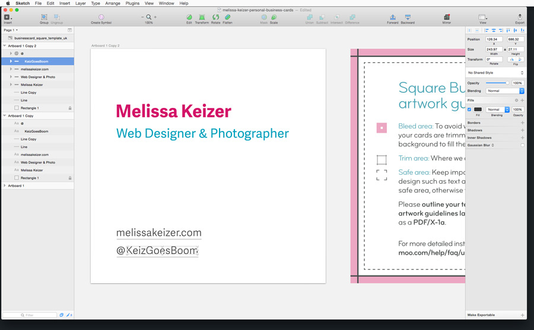
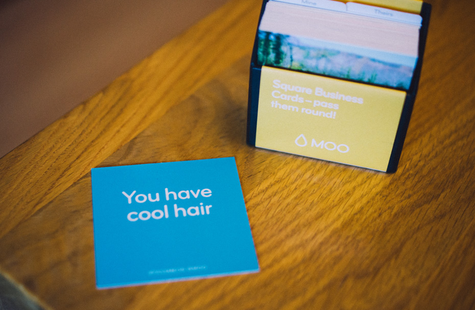
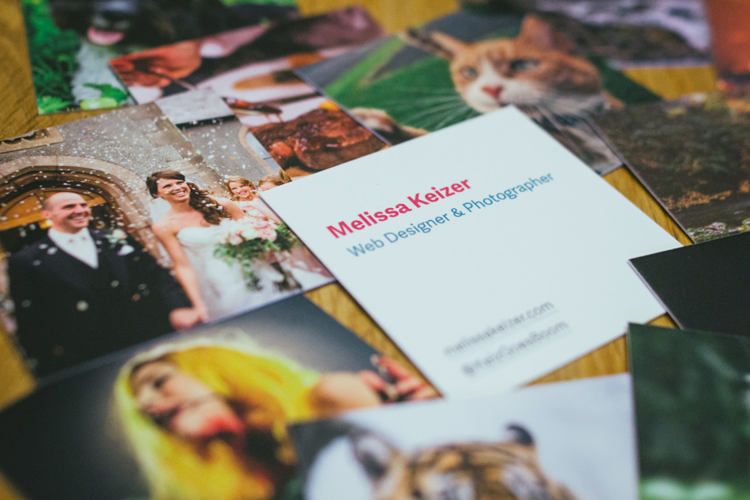

Hey, Take My Card
Posted on Aug 17, 2015
Posted on Aug 17, 2015
After attending some local events with my camera where a few people asked about my freelance photography services, I thought it would be wise to have some personal business cards I can give out at future events. So, late one night last week I set about designing my cards.
I know Sketch isn’t exactly designed for print work, but I set up my artboards and gave it a go anyway. Keeping the design inline with my personal website, I kept the design fairly minimal and used Adelle Sans, set in my website’s primary colours.
 Who says Sketch can’t be used for print work?
I was keen to use Moo as their square business cards with unique backs were exactly what I was after. I uploaded my design as a PDF for the front-side, along with 12 different photographs for the back of each card. This way, I could carry about a mini portfolio of my work in my purse! After completing my order, my cards arrived a few days later.
 Delightful touches like these can really make a brand
Upon opening the package a little blue card fell out, telling me I have cool hair, putting a smile on my face. I then found my business cards inside a little black box.
 A mini portfolio in my pocket
I was very happy with the quality of the cards, the matte finish on their original paper was perfect. Moo served up a great user experience, from making the design and upload process on their website very easy, to providing simple delights when you receive the product.
So I’d definitely recommend you try them if you’re interested in having business cards made yourself. Oh and if you were to use my referral code that would great ;)
Share on Twitter